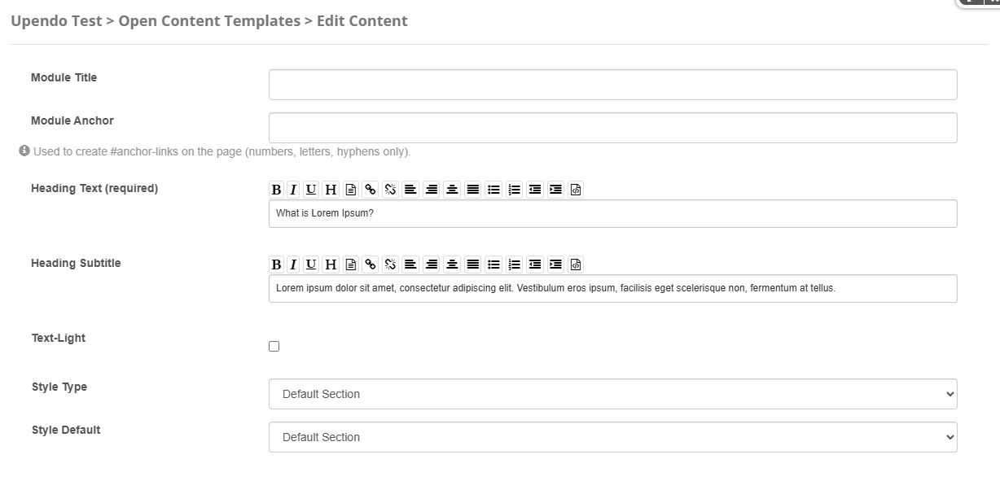

Porto-Section-Parallax Documentation
Table of Contents
Overview
The Porto-Sections Parallax component allows you to create sections with a parallax scrolling effect, enhancing depth and visual experience on the interface. You can customize background images, scrolling speeds, and effects to fit different design needs. Porto defines the appearance and behavior of the popover, while its implementation is managed through OpenContent, providing greater flexibility and customization.
For more details, check out the Porto-Section-Parallax repository on GitHub or the Porto documentation.
Usage Example
Edit
Properties
| Property | Data Type | Description |
|---|---|---|
| Heading | String | Required. The main heading text for the section. |
| Heading Subtitle | String | An optional subtitle to provide additional context or supporting information for the heading. |
| Text-Light | Boolean | Optional. Determines if the text should be styled as light-colored text. |
| Style Type | List |
Defines the overall style of the section. Available options include:
|
| Style Default | List |
Specifies the style for the "Default" section type. Options include:
StyleType is set to "Default".
|
| Style Parallax | List |
Specifies the style for the "ParallaxSection" type. Options include:
StyleType is set to "ParallaxSection".
|
| Style Background | String |
Specifies the style for the "BackgroundSection" type. Options include:
StyleType is set to "BackgroundSection".
|
| Image | Image |
Required. The background image for the section.
Dependency: Required for BackgroundSection, ParallaxSection, HalfSection, and HalfSectionParallax.
|
| VideoUrl | String |
Required. The video file URL for the section background.
Dependency: Required for VideoSection.
|
Views
Below are the different views available for the Porto-Section-Parallax component:
Default Section:
Primary Section:
Custom Background Section:
Parallax Section (Fixed Image):
Notes
- Ensure that the
StyleTypeis set correctly to match the desired section type (e.g.,ParallaxSection,BackgroundSection, etc.). - Provide a valid
ImageorVideoUrldepending on the section type to ensure proper rendering. - Use the appropriate style properties (
StyleParallax,StyleBackground, etc.) to customize the appearance of the section. - Test the parallax and background effects on different devices to ensure compatibility and responsiveness.
- For sections with text, ensure that
TextLightis set appropriately to maintain readability against the background.